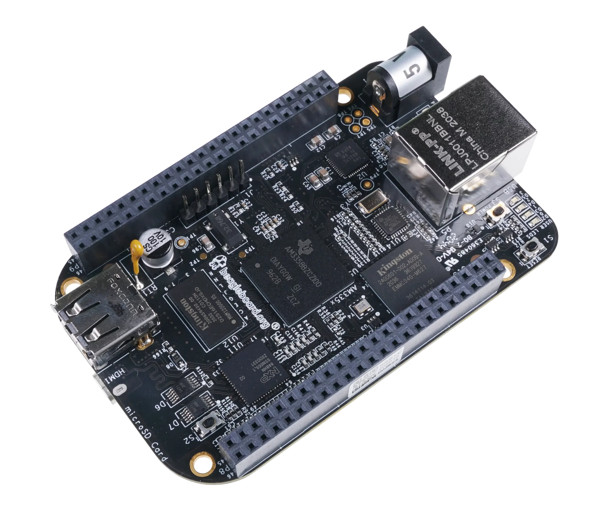
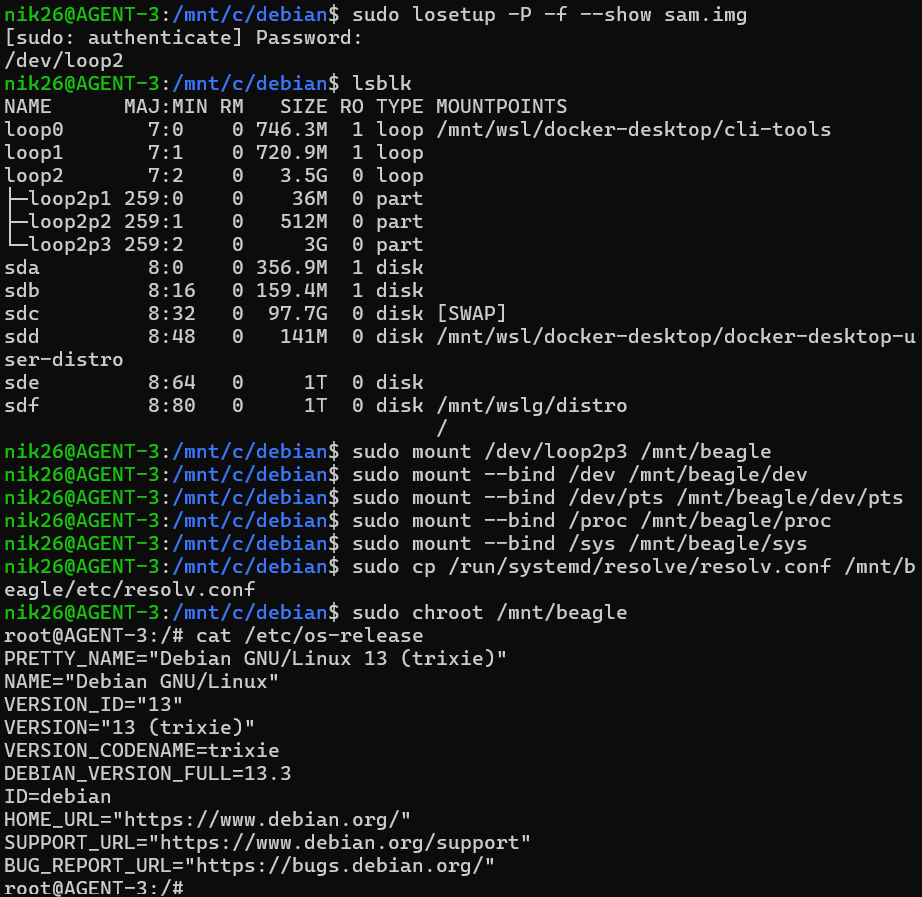
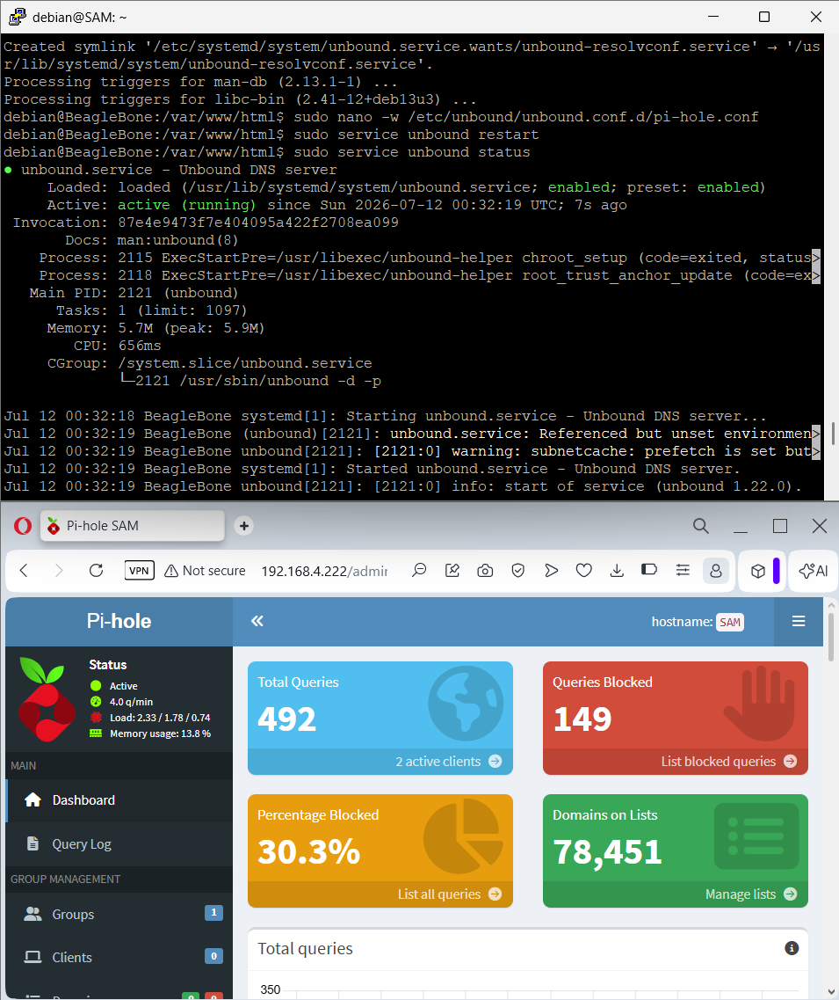
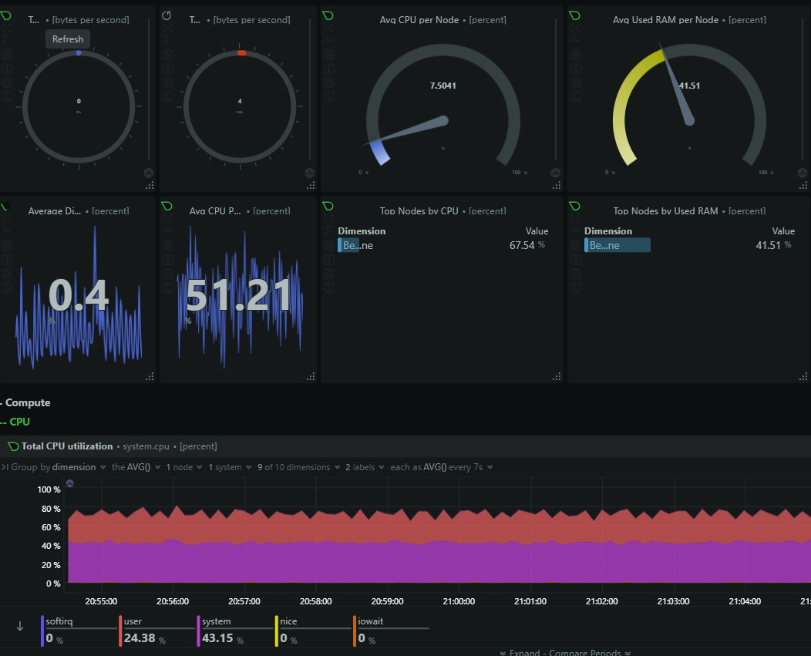
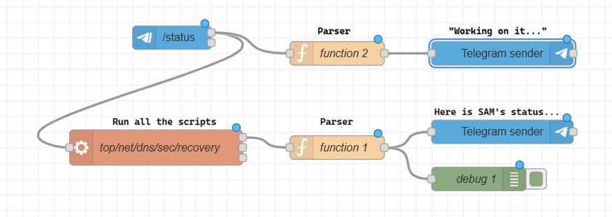
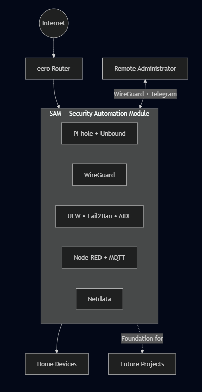

Why Build a Homelab?
A project that I have always wanted to embark on is creating my own homelab. For those who do not know, a homelab is a self-hosted personal Information Technology (IT) environment that lends itself to experimentation with software, hardware, automation, and education. Many people use homelabs to gain practical experience with networking, software development, infrastructure deployment, and many skills that a day job simply can't provide. The best part is that all of this can be done without risking a corporate production network or compromising your internet at home. Many practical examples of homelabs include building custom firewalls, setting up media servers, managing home automation, and running hypervisors.
My main hesitation behind starting my own homelab wasn't so much a lack of experience, but rather a lack of purpose. Why build a homelab if you're already gaining experience from your day job? What if you don't have the time to maintain it, between keeping up with daily life and studying for certifications or graduate school? Plus, where is all of the money going to come from to build the perfect homelab? Then, the realization hit me: I don't need to make the perfect homelab, or dump thousands of dollars into hardware that I might not know how to use. Instead, let's start with something small and practical to maintain, and slowly scale up from there.
The Homelab series of articles will cover the creation and scaling of my homelab from a simple ad blocker to a self-learning cybersecurity powerhouse. I'll take you through my learning experience, providing safe ways to replicate and improve upon my work so that when it comes time for you to make your own homelab, you will have a foundation to build upon. In this article, I will cover the creation of the first part of my homelab: a souped-up ad blocker built on embedded hardware.
Meet SAM, the Forward-Deployed Beagle

SAM, short for Security Automation Module, is the cornerstone of my homelab and the very first component I developed. Built on the BeagleBone Black (BBB) rev. B, this board includes onboard Ethernet, USB host, micro HDMI, and extensive GPIO, making it well-suited for embedded networking projects. Developers often use the BBB for projects in robotics, embedded systems, and firmware development. I felt this would be the perfect fit for this project, as it blends together elements of software and hardware development into a security-minded embedded appliance, perfect for sitting on the outer edge of my homelab.
Development of SAM is split into five parts:
- Developing the testbench, where I can simulate the firmware before flashing it to SAM,
- Installing the fundamental firmware, such as Pi-hole, Unbound, and Wireguard for DNS privacy and secure connection to SAM,
- Adding additional software to secure the perimeter through fail2ban, AIDE, and automatic-updates, and
- Creating a feedback loop by incorporating automation (Node-Red), messaging (Mosquitto/Telegram), and dashboarding (Netdata) to quickly analyze the health of the homelab and remediate problems from anywhere in the world, and
- The final deployment of the operating system onto SAM and its release into my home network.
The end product is a robust, fully-functional edge device that can be deployed for any variety of infrastructure that needs privacy, security, and addressability.
Developing the Testbench

For this project, I needed a way to reliably test the firmware changes I wanted to make without needing to repeatedly flash a MicroSD card onto SAM every time. I downloaded a sample Debian 13 (Trixie) image designed for compatibility with the TI AM335 series, the primary processor for the BBB. Then, because I am more used to the Linux command set (and didn't want to mess with Windows drivers), I used Windows Subsystem for Linux (WSL) to mount the image and access the filesystem using chroot. There were a couple of hiccups along the way that I want to pass along:
- I used a standard Ubuntu image for this process. Your instructions may vary if you are using a different flavor of Linux (Arch, Red Hat, etc.)
- We need to find the location of the test firmware in order to properly mount it. From there, we run
losetupto get the drive name andlsblkto get the drive map. This comes out to/dev/loop0andloop0p3respectively for me. - To access the full filesystem for some commands (
sudo,i2cdetect, etc.) we need to make some bind some folders between WSL and SAM's firmware. We do this using themount --bindcommand. - A significant part of my testbench work involves being connected to the internet. While this is something we will need to remember for later (sharing the IPv4 address with the host system), we need to copy the
resolv.conffile from WSL to SAM's firmware. - The full command set used to reliably mount and unmount SAM's firmware to WSL is shown below.
Click to see the full mount and unmount command set.
Mounting the Testbench
cd /mnt/c/debian(or wherever your Trixie image is)sudo apt install qemu-user-binfmt-hwe(to interface with hardware later)sudo losetup -P -f --show sam.img(to get drive name, usually/dev/loop0)lsblk(to get drive partition, usuallyloop0p3)sudo mkdir -p /mnt/beaglesudo mount /dev/loop0p3 /mnt/beaglesudo mount --bind /dev /mnt/beagle/devsudo mount --bind /dev/pts /mnt/beagle/dev/ptssudo mount --bind /proc /mnt/beagle/procsudo mount --bind /sys /mnt/beagle/syssudo cp /run/systemd/resolve/resolv.conf /mnt/beagle/etc/resolv.conf(simply copying/etc/resolv.confwon't work, as this is a pointer to the file insystemd)sudo chroot /mnt/beagle(should let you access the firmware asroot)
Unmounting the Testbench
Make sure to properly unmount before ending your work, otherwise you might lose data.
sudo umount /mnt/beagle/dev/pts(must come beforedev)sudo umount /mnt/beagle/devsudo umount /mnt/beagle/procsudo umount /mnt/beagle/syssudo umount /mnt/beagle(must be done after the subfolders are unmounted)sudo losetup -d /dev/loop0(to reset the drive after mounting)
After applying the firmware changes I need for testing, I used the BeagleBoard Imaging Utility provided for free by BeagleBoard. Other flashers may work as well (BalenaEtcher, etc.) but I found this one to be most reliable.
Building the Network

The next step after achieving testbench functionality is to update the firmware and make sure everything is current and has the latest security patches. To do this, a simple sudo apt update and sudo apt upgrade bring everything in line. After that, we can start building the networking infrastructure that makes SAM a valuable security appliance. We achieve this using three applications: Pi-hole for ad blocking, Unbound for local DNS resolution, and Wireguard for a secure communication tunnel.
Pi-hole
Pi-hole is my primary motivation for this project, and it serves as a network analyzer prevents DNS lookups for known advertising and tracking domains. It achieves this using its gravity engine, which polls the Pi-hole database and checks for updates automatically. This service is pretty straightforward to set up, save for one issue we covered in the testbench section: the shared IP address passed from the host machine (Windows) to the test firmware.
Pi-hole's setup script will use the IP address we are using on eth0 to complete setup, but using the default configuration we cannot test this until it is flashed onto SAM. There is a way to change this once it is deployed (pihole -r), but this isn't what we want - the goal of the testbench is to fully architect the firmware and flash it onto SAM when it is ready to intercept traffic. I got around this by doing...
Unbound
After configuring Pi-hole, the next step is to install Unbound to perform recursive DNS resolution locally, reducing reliance on third-party DNS providers. I decided to install this one from a privacy standpoint. Instead of setting the default DNS servers to Google (8.8.8.8) or Cloudflare (1.1.1.1), they will point to SAM's IP. Unbound will then act as a proxy for the DNS requests coming from other devices to help protect the privacy of their DNS requests across the Internet. This way, DNS requests sent from other devices on the network will not be sent directly to a public recursive resolver, such as Google or Cloudflare's servers, leaving users on my network in greater control of who can access their data.
Unbound was very easy to set up, but it requires Pi-hole configuration to be complete first. You can install Unbound from apt: sudo apt install unbound. To have Unbound interact with Pi-hole requires some further configuration that this Crosstalk Solutions article covers pretty well.
Wireguard
The final step in SAM's network infrastructure involves creating a secure communications channel so we can securely communicate with SAM, and later on, the rest of the homelab. We do this through Wireguard, which does exactly that. Like Unbound, Wireguard is very easy to install and setup: sudo apt install wireguard. The challenge comes in synchronizing the communications key between SAM and my host Windows device. Windows has a separate installer that I will need to create a public and private key from, and then share that key with SAM.
Of course, if I'm talking to SAM over SSH and I suddenly close access to this port, then configuration quickly becomes impossible. This was not the easiest to prototype using the testbench we discussed earlier, so I had to think outside the box to get this to stick. To get around this, I created the tunnel ahead of time, finished installing and importing the remainder of the services I used for SAM, and enabled the tunnel at the final step, at the point of deployment. This made Wireguard the last box to check when deploying SAM, but because of the flexiblity of the testbench, it was very easy to abort and revert state should something go wrong.
Securing the Perimeter

Now that the primary components of the project are in place, it's time to lock SAM down and solidify its space as the cornerstone of the home network, and eventually the homelab. This section details more of the software that works under the hood, paying close attention to firewalls, integrity solutions, and router reset functionality.
Firewalls
While we have already secured communciations using Wireguard, it's best practice to close as many open ports as possible on an Internet-connected device. The solution: Uncomplicated Firewall (ufw), which quickly and easily plugged all of the remaining open ports on SAM. I chose this over nftables, a popular alternative, because we are not yet dealing with complicated NAT or interface configurations. Because ufw comes pre-installed on Debian images, all I had to do was insert the rules I wanted, set a default policy (I always stand by default block), and enable the firewall with sudo ufw enable.
Integrity
I took a three-pronged approach to integrity. First, as an attacker, I was looking for a quick solution to identify and block troublesome IP addresses that attempt to brute-force their way onto SAM. Fail2ban helped take the headache out of manually blacklisting IP addresses with the concept of Jails. Fail2ban jails are a combination of filters (regex rules for log errors) and actions (amending ufw) that temporarily ban offending IP addresses from accessing SAM. This way, attackers that log too many authentication attempts are quickly picked up and remeidated before they become an issue.
Next, I considered the prospect of file manipulation and attacking at a more fundamental level. To assist with this, I installed Advanced Intrusion Detection Environment (AIDE) which tracks unauthorized changes to files and directory by creating a snapshot of SAM's metadata and hashes, alerting me if anything is modified, added, or deleted. Installing is easy (sudo apt install aide), but setup is what takes the most time. AIDE hashes nearly every monitored file on disk, it took over an hour to complete setup in the testbench. Because the snapshot is comprehensive, this is one of the last elements I enabled on my machine.
Finally, we want to avoid the hassle of letting libraries go unattended for a long time and then coming back every couple of months or so to perform massive library upgrades. This is where unattended-upgrades comes in, keeping software and security patches up to date in the background so SAM can continue to work without fault. You may need to verify that the auto-upgrades file (/etc/apt/apt.conf.d/20auto-upgrades) is set to check for new packages daily:
APT::Periodic::Update-Package-Lists "1";APT::Periodic::Unattended-Upgrade "1";
Router Reset
A fundamental part of SAM's functionality is being able to reset the router from anywhere in the world. I solved this problem by interfacing with the router directly instead of messing with smart plugs or the electrical itself. I used an eero router for this project, which has great mobile app support but tends to be a little difficult to manage on the desktop. There is a CLI developed by 343max that answers this need: eero-client. The setup for eero-client is simple: authenticate using your phone number and an SMS keycode (much like you would if you were setting up your eero router for the mobile app), and then you can dump a whole bunch of data about your mesh network through the client. What we are most interested in is the reboot functionality, which we want to take advantage of when we are unable to connect to the internet after a prolonged period of time. If my Internet connection becomes unstable while I'm away from home, SAM can determine that the WAN has been unavailable for an extended period and issue a reboot command to the eero gateway. This allows me to recovery from many ISP or router lockups without needing to physically go down to the basement and power cycle the router every time!
Creating the Feedback Loop

After settling the critical firmware, we can focus on creating logs and feedback loops. This is achieved through Mosquitto for simple MQTT relay between SAM and other devices on the network, Node-Red for low-code automation that builds upon the systems we have established, and Netdata for displaying the logs we collect in an easy-to-understand dashboard.
Mosquitto
At the beginning of SAM's development process, I needed to quickly and reliably communicate between devices without setting up a bidirectional mode of communication (more on that later). To achieve this, I used Mosquitto to quickly set up a communication line between publisher (SAM) and subscriber (usually my PC) to let me know things are working without needing to perpetually check in via PuTTY. Mosquitto comes pre-packaged in Debian (though running sudo apt install mosquitto mosquitto-clients wouldn't hurt) and can be activated using the publisher/subscriber:
- To publish messages to a topic:
mosquitto_pub -h-t "test/topic" -m "Hello World!" - To subscribe to a topic:
mosquitto_sub -h-t "test/topic"
Mosquitto is platform independent and can operate so long as the publisher IP is accessible via your network. Since SAM is operating in my internal network, it can communicate to my PC.
Node-RED & Telegram
Next, I needed a way to reliably communicate to and from SAM from anywhere in the world. Initially I wanted to use SMS, but then I discovered Telegram has the ability to create bots for exactly this purpose. After some discussion with the @BotFather, I was quickly on my way creating a bot to communicate with SAM from anywhere I had Telegram installed. The next part of the equation was what framework do I use to achieve this task? I found Node-RED easiest to test and implement pipelines by the nature of its drag-and-drop workflow creation mechanism. After installing the service on SAM, I can start its service and build pipelines that can receive and interpret messages from Telegram, gather data from SAM, and reply to me in the same DM channel. Plus, with the router reset ability so easily accessible via this solution, I can now troubleshoot internet connectivity problems and take action from anywhere in the world!
One issue I noticed early on is that Node-RED does not start on its own. To resolve this, I created a quick script that brings Node-RED online automatically, keeping the authorization key locked away off-device so someone stumbling onto the network couldn't take control of my pipelines. Now Node-RED starts on its own when SAM boots, bringing the pipelines online automatically.
Netdata
Finally, I needed a way to take all of the data that I had been collecting throughout the project and display it in one place. While the Telegram bot is great for quick analysis and responding to trouble, what if I want to take a deep dive into processor speeds and (in the future) how other systems are behaving when routing through SAM? This is where Netdata comes in. With a free install (sudo apt install netdata), I was able to quickly and anonymously deploy a service dashboard for SAM in all of five minutes. This dives deep into bandwidth, processor speeds, throughput, and lots of other data that would get lost in translation if I was just talking back and forth with the Telegram bot. This way, if I need to take a deep dive or analyze a program when SAM becomes part of a larger system, this will be a very useful tool.
Deployment

After installing, testing, and prototyping all of the immediate features I wanted to include on SAM, it was time to deploy the device into my home network. Using a dedicated power supply and a wired Ethernet connection to a mesh node in my eero network, I was able to quickly get the BBB online with the latest image of SAM flashed onto the microSD inside. Remarkably, the test suite was a great place to iron out all of the potential problems that the firmware may have had, and when the actual image was flashed onto the device, there were no problems! I was able to start the necessary services, bump up the firewalls, and let SAM get to work filtering out ads with Pi-Hole and building dashboards in Netdata. When needed, I was able to connect to SAM with the Wireguard tunnel established earlier and get real-time status reports from the Telegram bot.
After weeks of incremental testing, seeing the production image boot successfully on the first attempt was incredibly satisfying. Every hour spent refining the testbench paid off, and SAM immediately began serving DNS requests, blocking trackers, and reporting its health exactly as intended.
My Takeaways
Overall, this was a great project that made use of a board that I've been wanting to work on for a while. This project could be replicated on a Saturday afternoon if you had the motivation, and I'd recommend tinkering with boards and distributions like this if you are interested in taking more control over how your home network operates. Moving forward, SAM will be the cornerstone of my homelab as I build it from the ground. I'd like to tinker with the cape headers on top of the board, maybe spin up some embedded systems or do something cool with the additional features this board has to offer. The next homelab project will serve as an extension of this one, creating a distributed network for local media.
Published July 2026